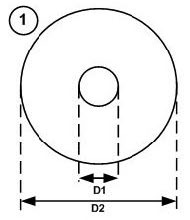
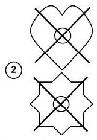
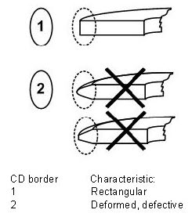
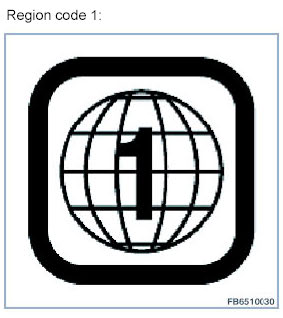
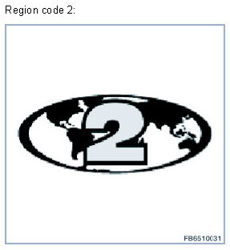

Geometrical Characteristics of CDs and DVDs
Geometrical Characteristics Of CDs And DVDs
All CD or DVD drives in the vehicle may only be loaded with standardized CDs. CDs that do not conform to standard can damage the changer. BluRay media cannot be used.
Shape of the CD
Only CDs that comply with the specifications for geometric characteristics may be inserted in the CD changer.

Only the CD shape shown above is permitted. In addition to this shape, the specified characteristics specified below must also be correct. The changer can only work without errors if the shape and geometric characteristics match the specifications.
Geometric characteristics Specification:
Shape: Round
Diameter (D1): 15 mm
Diameter (D2): 120 mm
CD thickness: 1.1 mm - 1.5 mm
The following illustration shows possible shapes that do not conform to the standard. These or similar shapes can damage the drive.

Border of the CD
The CD border should be rectangular. Deformed or defective borders are potential sources of fault. Deformed or defective borders can mean that the CD is not drawn in or ejected properly.

Visual characteristics of CDs and DVDs
The visual characteristics of CDs and DVDs have to be checked alongside the geometric characteristics.
Characteristic Problem
Scratches Scratches on the CD or DVD disrupt playback. Deep scratches on the medium can lead to read errors. In the worst case, the entire content of the CD is not read.
Burned CD - In the case of poor-quality CD blanks, the geometric specifications are not always met.
- The quality of the CD can be impaired when CDs are created at home.
Burned CD with label - The increased temperature in the drive can make applied labels come unstuck and lead to damage.
- An applied label changes the thickness of the CD. This change must be checked against the geometric characteristics.
DVD region codes
The illustrations below provide examples for region code 1 and region code 2. The region codes 3 - 5 have precisely the same appearance, except in that the numbers 3, 4 or 5 take the place of 1 and 2.

